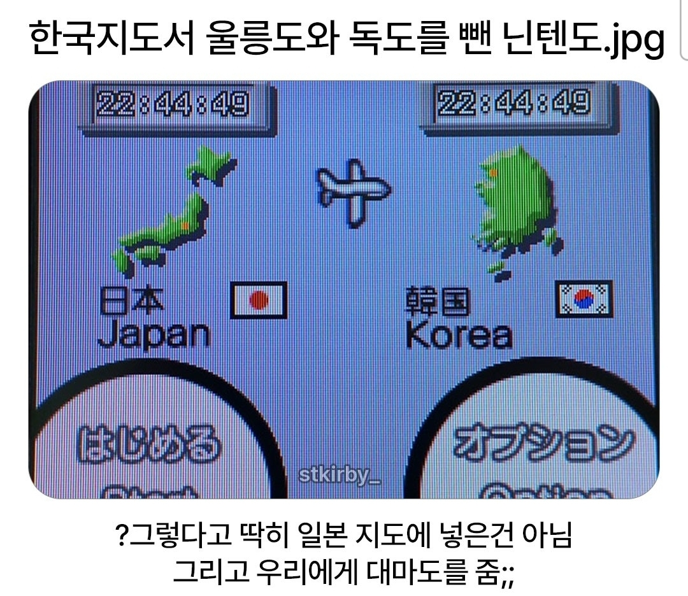

쟤네는 오키나와도 독립시켜줬나보네
그냥 관심이 없어서
대마도 정도가 독도로 아는거 아니냐
울릉도도 없고
쿠파의 답례다 한국놈들아!
수상하게 거북이가 적으로나오는나라
제목보고 : 이런 씹쌔끼....
내옹보고 : 오....씹새끼....
고맙..다?
진행시켜
일본 애들 독도 울릉도 위치 정확히 아는 사람이 거의없다는거같던데
다케시마도 일본 류큐열도에 있는 섬이라고 함...
그러니 한국이 다케시마가 자기네땅이라고 합니다 하면 폭동이 나는거임...
일본이 안면도 자기네꺼라 하는급의 선동...
물론 진짜 독도문제도 있지만, 예전에 길거리에서 일반인 인터뷰 한적 있는데 전부 다 일본 남쪽 다케시마인줄 알더라고...
일반인들은 독도 어딨는지도 몰러..
??? : 다케시마는 당연히 일본땅이죠? 아니었으면 이름이 다케시마겠어요?
아맞다 대마도
올ㅋ
이것을 높게 평가
그냥 ㅈ만한 섬 다 제외한거자나
ㄹㅇ 일본, 한국 작은 섬들 다 날아갔구만
자원측면에서는 울릉도에 하이드레이트가 있다는데 난 그 채굴가능성과 활용성이 믿어지지가 않아서. 차라리 대한해협의 동해와 남해를 잇는 길목을 완벽히 차지하는 해상통제권이 더 나을듯함.